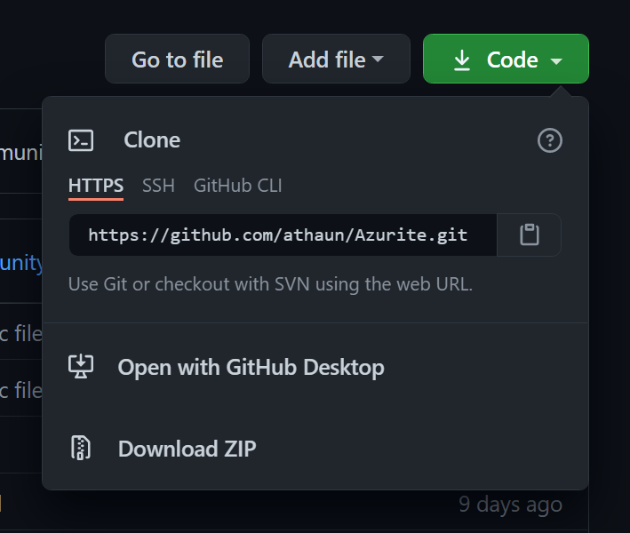

Setting up a project is Azurite Engine is easier that you probably thought.
Getting the engine consists of this one easy to follow step. Just type this text in the terminal of your choice:
git clone https://github.com/Games-With-Gabe-Community/Azurite
If you don't have Git installed on your computer don't worry, there is a solution for that. Simply click the green "Code" button at the top of the repository and then "Download ZIP".
After cloning to the folder, open it with an IDE of your choice. Then import the dependencies from "build.gradle" file and run the "Main.java" file, there you have it, Azurite Engine with a sprite and a basic lighting following your cursor.